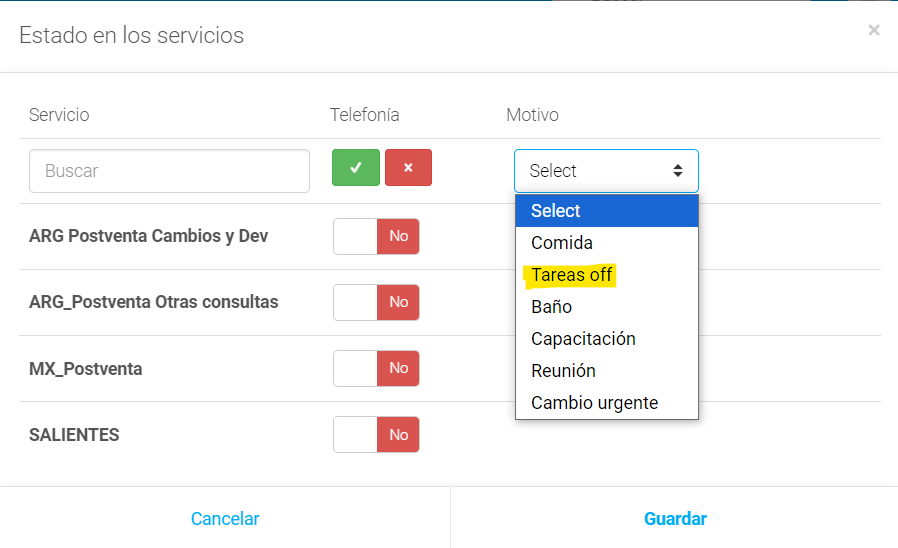
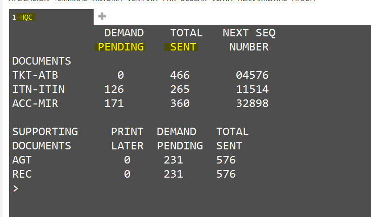

🚀 Pasos para comenzar a gestionar
1. Loguearse en Numintec y cambiar el estado según la tarea asignada.
2. Desde el teléfono rojo, ingresar a la pantalla para cambiar y guardar el nuevo estado:

3. Abrir herramientas de trabajo principales:
📠 Gestión de Impresoras (GDS)
Proceso Diario: Es obligatorio levantar las impresoras al inicio y a mitad del día. En Galileo suelen caerse y requieren reactivación.
Comandos de Verificación
HQC: Estado de archivos subidos/pendientes.

HMLD: Valida si las impresoras están UP.
.png)
📍 Impresoras por Dominio (Galileo)
🇦🇷 Argentina
IATA Propio: 55547925 | Ricale: 55507491
- • Logueo: HMLMB8C3E5DT/B8C3E6DI/B8C3E7DA
- • Pri: HMOMB8C3E5-U
- • Seg: HMOMB8C3E6-U
- • Ter: HMOMB8C3E7-U
🇵🇪 Peru
IATA: 91503031
- • Logueo: HMLMFE0D86DI/FE0CC1DA
- • Pri: HMOMFE0CC1-U
- • Seg: HMOMFE0D86-U
🇨🇱 Chile
IATA: 75502770
- • Logueo: HMLME707BEDA/BCA91DDI
- • Pri: HMOME707BE-U
- • Seg: HMOMBCA91D-U
🇲🇽 México
IATA: 86970214
- • Logueo: HMLM862404DT/862405DI/862406DA
- • Pri: HMOMB88FAB-U
- • Status: HMLMB88FABDA